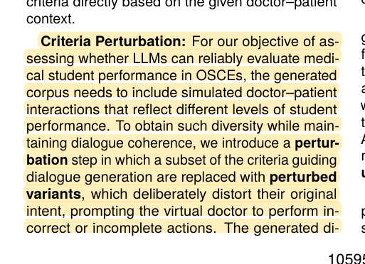
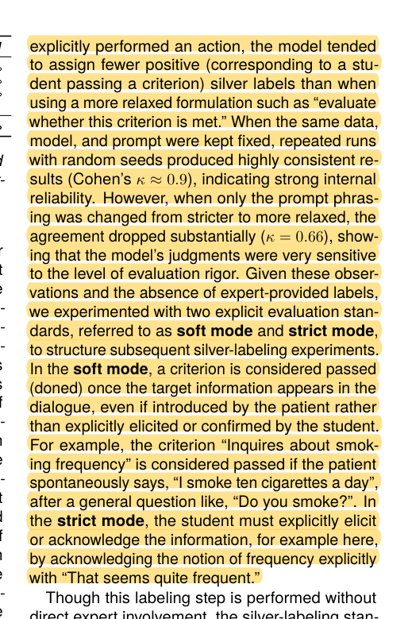
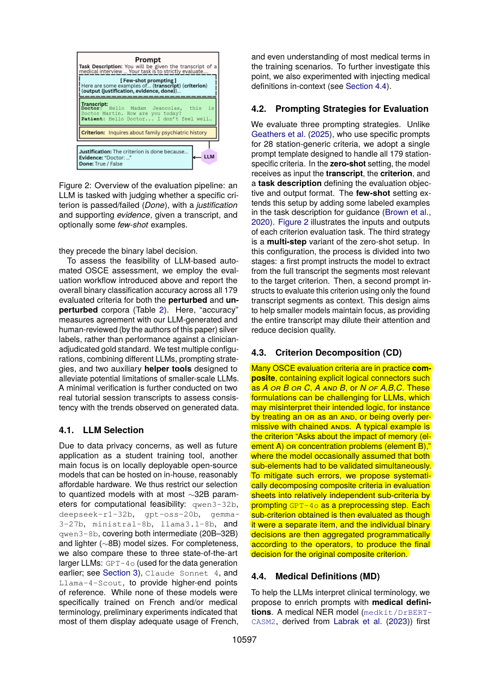

R14 · Virtual patients and OSCEs
OSCE evidence must distinguish information appearing from the learner performing an action
LLM-Based Data Generation and Clinical Skills Evaluation for Low-Resource French OSCEs
Tian Huang, Tom Bourgeade, Irina Illina · 2026
LREC 2026, 10592–10602
What the study investigates
French OSCEs have limited public dialogue data and expert scores. The study asks how to generate performances at different levels and evaluate clinical skills with LLMs.
How it was studied
The authors use doctor, patient, and examiner materials to generate dialogues with reordered behavior items. Leaf-level perturbations create correct and deficient performances. The study covers ten stations and 179 items. LLM-generated reference labels are reviewed by the authors and explicitly described as silver labels.
Findings
Repeated judgments are relatively stable when model and prompt stay fixed, but agreement falls substantially when evaluation wording changes from strict to lenient. Lenient evaluation may credit patient-volunteered information; strict evaluation requires the learner to ask or confirm it.
Limits of the evidence
Silver labels are not pharmacy-faculty gold-standard labels. Repeatability is not correctness. The policy “information appeared, therefore award credit” cannot be transferred directly to CUHK's four stations.
How it informs DualGraph-OSCE
Section 4.3 already decomposes AND, OR, and N-of requirements into leaves and aggregates them in code, reporting model errors on composite conditions. That solution must be acknowledged. DualGraph-OSCE tests how evidence eligibility and delivered role interventions jointly affect online authorization and assessment. Diagnostic pairs can change speaker, actual versus hypothetical action, negation, or prompt order; faculty should define the expected change before predictions are revealed. Perturbations must remain clinically coherent.
Where to cite it
Problem statement: direct evidence of attribution sensitivity. Evaluation: minimal-pair and perturbation design.
Possible manuscript wording
French OSCE research finds that judgments differ depending on whether the criterion is information appearing or the learner performing an action. Evidence eligibility therefore needs explicit definition and validation.
[R14·1]This is a manuscript-specific paraphrase, not a quotation from the source. The excerpts below define what the citation supports. The proposed method and its expected benefits are not findings of the cited paper.
Source passages and precise locations
Page numbers refer to physical pages in the saved original PDF, including any repository cover sheets. Compilation page numbers are listed separately. Yellow highlighting marks the passage used for the argument.
R14-E1Controlled perturbation generation
Original PDF page 4. Highlight compilation page 201. The highlight identifies the passage used here; consult the full original page for its context.

R14-E2Fixed prompts versus changed evaluation strictness
Original PDF page 5. Highlight compilation page 202. The highlight identifies the passage used here; consult the full original page for its context.

R14-E3Speaker and behavioral attribution policies
Original PDF page 5. Highlight compilation page 202. The highlight identifies the passage used here; consult the full original page for its context.
 R14-E4
R14-E4Section 4.3: AND/OR/N-of leaf decomposition and code aggregation
Original PDF page 6. The highlight identifies the passage used here; consult the full original page for its context.
